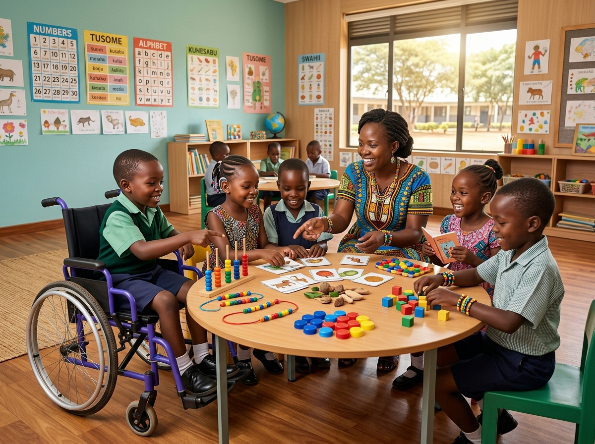
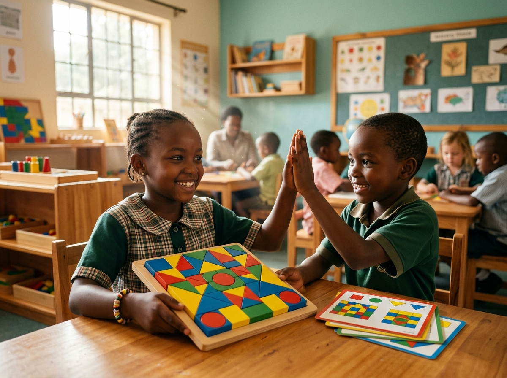

Every Learner Included.
Every Ability Supported.
A pioneering inclusive education platform empowering Kenyan teachers, parents, schools, and specialists to co-create accessible, competency-aligned learning experiences for learners with diverse educational needs.

Learning Designed Around the Child, Not the Other Way Around
Traditional schooling frequently demands that children adapt to rigid, one-size-fits-all formats. Jumuishi transforms this paradigm: we adapt curriculum, instruction, materials, and assessments to honor how each individual learner naturally thrives.
Strength-Based Pedagogy
We focus first on what the child loves and does best — whether tactile curiosity, vivid visual memory, or kinetic energy — using those assets to scaffold reading, numeracy, and social participation.
Universal Design for Learning (UDL)
Offering multiple means of representation, expression, and engagement. What benefits a neurodivergent learner or a child with speech delay enriches comprehension for every single classmate.
Dignity, Agency & Zero Pity
Learners with disabilities are active participants, creators, and thinkers — never passive recipients of sympathy. We build resources that respect learner autonomy and foster self-advocacy.
Locally Grounded Kenyan Realia
No dependency on high-cost imported tech. Our adaptations leverage widely accessible materials — bottle tops, maize grains, market stories, and bilingual English-Kiswahili scaffolding.

True inclusion is not about fitting children into standard desks; it is about widening the circle until every child has a rightful, dignified place to shine.
Support for Diverse Learning Needs
Every child experiences learning uniquely. Explore evidence-informed adaptations, accommodations, and teaching strategies across 9 essential categories.
Dyslexia & Reading Differences
Support for phonological processing, reading fluency, and working memory.
Down Syndrome & Intellectual Needs
Strengthening concrete understanding, visual learning, and routine predictability.
Deaf & Hard of Hearing Learners
Visual communication, Kenyan Sign Language (KSL) integration, and clear line of sight.
Speech, Language & AAC Needs
Empowering expressive communication through picture boards, gestures, and AAC symbols.
Blind & Low Vision Learners
Auditory descriptions, high-contrast printing, and tactile textures.
Physical & Motor Accessibility
Grip supports, accessible seating, and alternatives to fine-motor writing tasks.
Autism Spectrum & Sensory Support
Predictable visual schedules, sensory decompression zones, and special interest bridges.
ADHD & Executive Functioning
Kinetic movement breaks, bite-sized tasks, visual timers, and immediate encouragement.
Multiple & Complex Learning Needs
Comprehensive multi-tiered support uniting cognitive, physical, and sensory tools.
How Jumuishi Works in Practice
Crafting tailored, inclusive learning materials takes less than two minutes. Follow our straightforward 6-stage pathway to transform any curriculum topic into an equitable classroom experience.
Define Context
Select grade level, subject area, and target CBC learning concept.
Identify Strengths
Anchor the plan in the child's real talents, hobbies, and learning modalities.
Select Needs
Choose primary support areas and specific barriers to overcome.
Choose Format
Pick lesson plans, visual cards, activity guides, or assessment rubrics.
Apply Adaptations
Select sensory, visual, reading, and low-cost Kenyan materials.
Generate & Print
Review differentiated outputs, edit inline, and export instantly.
Jumuishi Inclusive Content Builder
Generate custom, differentiated, and CBC-aligned learning adaptations tailored precisely to your learner's strengths, communication style, and support needs.
Inclusive Lesson & Activity Designer
Step-by-step wizard creating equitable learning materials. Works 100% in your browser with zero registration required.
Step 1: Learning Context & Curriculum Alignment
Define the grade level, learning area, and core concept you are preparing.
Step 2: Learner Strengths, Talents & Preferred Modalities
We build upon what the learner can do and loves doing. Inclusive design starts with strengths.
Step 3: Identified Learning Needs & Sensory Accommodations
Select the primary learning areas where the learner requires accommodations.
Step 4: Desired Content Type & Output Format
What type of inclusive teaching material do you need to generate?
Step 5: Specific Universal Adaptations & Accommodations
Fine-tune the exact accommodations to incorporate into your generated resource.
Creating Your Inclusive Resource...
Analyzing learner strengths and communication preferences...
Synthesizing Universal Design for Learning (UDL) principles with Kenyan CBC competencies.
Multiplication as Equal Groups — Inclusive Lesson Plan
Inclusive Course & Lesson Studio
Create, upload, organize, and update inclusive courses and lesson plans. Attach teaching materials, configure multi-tiered UDL accommodations, and bridge lesson plans directly from the Content Builder.
My Inclusive Teaching Curriculum
Organize full termly units and individualized lesson plans. All course data, lesson notes, and uploaded resources remain 100% private and stored locally in your browser.
CBC Grade 3: Inclusive Mathematics & Numeracy
Foundational numeracy emphasizing concrete manipulatives and multisensory representations.
See Jumuishi in Action: CBC Grade 3 Mathematics
Explore how a standard Kenyan curriculum lesson — "Multiplication as Repeated Addition" — is transformed into an equitable, multi-tiered experience where every child can participate.
Mathematics: Multiplication as Equal Groups (Repeated Addition)
By the end of the sub-strand, the learner should be able to represent multiplication as equal groups of objects up to 5 × 5 in practical contexts.
- Plastic bottle tops (red, blue, yellow) sorted into small calabashes / tins.
- Large high-contrast number cards (24pt font + tactile raised dots).
- Chalk circles drawn directly on classroom desks for grouping zones.
Method: The learner receives 3 chalk circles on their desk. The teacher says: "Put 4 bottle tops in each circle." The learner counts 4, 4, and 4 physically. To find the total, they slide all bottle tops together into the center and count 1 to 12. No pencil or abstract notation required to demonstrate concept mastery.
Method: The learner is equipped with a 4-choice visual communication board featuring picture symbols for numbers (3, 6, 9, 12). When the peer partner builds 3 groups of 4, the learner points to the "12" card or activates a single-switch voice buzzer. They participate actively in group questioning alongside speaking peers.
Method: Instead of dense paragraph word problems, the task is presented with colour-coded boxes and icon labels: 3 baskets × 4 mangoes. The teacher reads the question aloud, and the learner records the answer using a stamp or sticker rather than writing out long sentences.
Method: The learner acts as the class "Market Distributor", walking to each desk to deliver groups of bottle tops. Counting happens through physical steps: taking 3 hops of 4 floor tiles each. High kinetic engagement channels focus into mathematical understanding.
Inclusive Resource Library
Search and filter our growing collection of CBC-aligned inclusive lesson templates, sensory activities, communication aids, and teacher guides.
Phonics & Blending with Raised Tactile Letters
Multisensory phonics guide combining sand tracing, large card cutouts, and oral rhyming games for learners struggling with letter reversals.
Classroom Daily Routine Visual Schedule Strip
High-contrast illustrated picture card strips showing "Arrival, Circle Time, Free Play, Snack, Story, Farewell" to support anxiety-free transitions.
Parts of a Plant: Bilingual KSL & English Flashcards
Botanical vocabulary paired with Kenyan Sign Language illustrations (Root, Stem, Leaf, Flower) and real potted classroom specimens.
Kadi za Mawasiliano: Hisia na Mahitaji ya Kila Siku
12 high-utility picture communication cards in Kiswahili: "Ninataka Maji", "Choo", "Nimechoka", "Nisaidie", "Furaha", na "Mimi Tayari".
Money Concepts & Soko Shopping Simulation
Simulated Kenyan market stall with clean fruit props and fake 10, 20, and 50 shilling coins, practicing practical exchange through repeated role-play.
Creative Composition with 5-Minute Sprint Cards
Deconstructs long essay writing into four 5-minute creative sprints with tactile visual timers and kinetic movement resets between paragraphs.
Weather & Climate with Tactile Texture Maps
Map reading using sandpaper for arid regions, bubble wrap for rainfall zones, and cotton for cloud types, accompanied by descriptive audio cues.
Household Maths Games for Parents & Caregivers
A bilingual parent guide with 8 fun evening games using clothespins, spoons, and bottle tops to build number sense without textbook anxiety.
Equipping Every Pillar of the Learner's World
Inclusive learning only succeeds when teachers, families, and school leadership move in coordinated harmony. Here is how Jumuishi supports each group.
Master Differentiated CBC Teaching
Manage large, diverse CBC classes with confidence and clarity. Turn standardized curriculum into engaging, multi-sensory learning adaptations with zero extra paperwork strain.
- Instant UDL-compliant lesson adaptations
- Structured peer-buddy collaboration frameworks
- Competency-based formative assessment rubrics
- Low-cost Kenyan realia & tactile sensory tools
Nurture Your Child with Joy at Home
Overcome homework anxiety and communication barriers. Access clear, empathetic guides to support your child during everyday family routines with unconditional dignity.
- Playful home practice games in English & Kiswahili
- Sensory regulation strategies for emotional calm
- Constructive parent-teacher conference advocacy guides
- Affirming unique strengths, agency, and self-confidence
Build an Institution of True Inclusion
Champion a campus-wide culture of belonging. Instructify Kenya partners with schools to provide accredited CPD workshops, school accessibility audits, and strategic SNE guidance.
- Institutional inclusion audits & readiness roadmaps
- Accredited teacher professional development (CPD)
- Low-cost assistive technology & AAC integration
- Ministry of Education SNE policy compliance & KISE alignment
Partner with Instructify Kenya's Inclusion Specialists
Looking to train your teaching staff, audit your campus accessibility, or design an institutional inclusion policy? Schedule an advisory consultation with our education specialists.
Choose Your Jumuishi Pathway
Get directly to what you need based on your role in the learning community.
Educator Pathway
For primary, secondary, and SNE teachers seeking practical lesson differentiation without administrative burden.
Parent & Caregiver
For mothers, fathers, guardians, and family allies nurturing a child with developmental or learning differences.
Institution & Specialist
For headteachers, curriculum coordinators, occupational therapists, speech therapists, and education officers.
Transforming Kenyan Classrooms, Learner by Learner
Instructify Kenya is committed to building tools that reach beyond well-resourced urban centers to serve rural, public, and community schools across all 47 counties.
“In a class of 48 learners with 3 neurodivergent students, differentiation used to feel impossible without exhausting overtime. Jumuishi generated a Grade 3 maths adaptation using bottle tops and visual cards in under 3 minutes. The entire class participated with genuine excitement.”
“For two years, homework was a stressful battleground with my son who has ADHD. The Jumuishi home routine guide showed us how to break reading into 7-minute kinetic bursts. For the first time, he looks forward to showing me his school work with pride.”
“What impresses me most is the zero-pity, strength-first philosophy. Rather than labeling children by clinical deficits, Jumuishi anchors every adaptation in what the learner can do, using tactile Kenyan realia that public schools actually possess.”
“Our school board was looking for actionable ways to fulfill Kenya's Special Needs Education policy framework. Instructify's Jumuishi hub provided our staff with practical differentiation templates that made our inclusive classes genuinely effective.”
Frequently Asked Questions
Find thorough answers regarding Jumuishi's pedagogy, privacy standards, CBC integration, accessibility features, and school partnerships.
Help Us Improve Jumuishi
This platform is an evolving initiative. Your classroom observations, parent feedback, and specialist recommendations directly guide our future features.
Prototype Evaluation Form
Share your thoughts on the Content Builder, accessibility features, and CBC adaptation relevance.